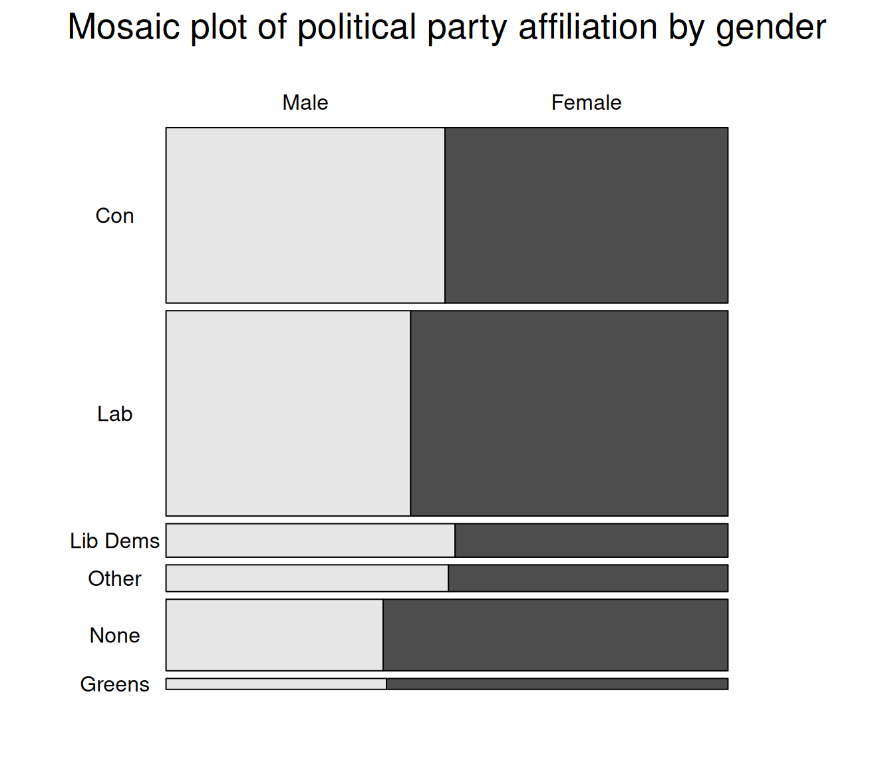

hist(bsa$leftrigh,freq=FALSE)7 Graphs and plots
There are two common ways to plot data in R: either by using the straightforward but rather basic plotting commands from the Base package, or instead delve into the more complex but much nicer looking functionalities of the ggplot package.
7.1 Distributional graphs for continuous variables
Plots such as histograms or box plots are a convenient way to gain a quick overview of the distribution of a variable and are easy to produce. Going back to the BSA data, we can plot the distribution of left-right political orientations scores with the hist() command.
The histogram should appear in the ‘Plot’ tab on the right hand side of the R Studio window. It shows us that political orientations are slightly skewed towards the left. The freq=FALSE option requires the y-axis to be expressed in terms of proportions rather than number of observations.
Titles and labels can easily be added:
hist(bsa$leftrigh,
freq=FALSE,
main="Histogram of political orientations, 2017",
ylab="Proportions",
xlab="Left-right political orientations score")Note that main, ylab and xlab can be used with any Base R plot commands.
We can also produce a box and whisker plot of the same variable in order to get a better sense of the distribution of outliers:
boxplot(bsa$leftrigh,
# main="Box and whisker plot of political orientations",
ylab="Left-right political orientations score"
)The generic plot() command produces scatterplots. Let’s try it with our left-right political orientations score, in conjunction with libauth, a libertarian vs authoritarian scale.
plot(bsa$leftrigh,bsa$libauth) ### Scatterplot of left-right political orientations scoreThe scatterplot shows us that there is little association between the two variables. However, slightly fewer respondents simultaneously score high on the ‘authoritarianism’ and ‘right’ scales, perhaps unsurprisingly.
7.2 Plotting categorical variables
The generic plot() function provides a quick way to produce bar plots of categorical data. For example, we can examine the distribution of political party affiliations (Politics variable). In order to do this we convert it into a factor (ie categorical) variable as previously. Some preliminary abbreviating of the factor levels are also required in order for them to be displayed properly.
bsa$PartyId2.f<-droplevels( # Getting rid of unused factor levels for neater output
as_factor(bsa$PartyId2) # Converting haven labelled variable to factor
)
levels(bsa$PartyId2.f)<-c(
"Con","Lab","Lib Dems","Other","None", "Greens" # Shorter level names
)
plot(bsa$PartyId2.f)More advanced plots require the barplot() function, which can be used in conjunction with table(). Whereas table() creates the data that will be plotted, barplot() does the actual plotting. For instance, we can produce the same bar plot, but this time with percentages, by creating a frequency table as we did above in Section 5.2, then plot it.
party.tab<-round(100*prop.table(
table(bsa$PartyId2.f)
),
1)
party.tab
Con Lab Lib Dems Other None Greens
33.5 39.2 6.4 5.1 13.7 2.1 barplot(party.tab,
main="Political party affiliation",
ylab="Percent")We can go further and create plots for two-way contingency tables of party affiliation by gender. This time we will do it in a single command:
#t<-xtabs(~PartyId2.f+Rsex.f,bsa) # First, let's get the contingency table
t<-xtabs(~Rsex.f+PartyId2.f,bsa) # First, let's get the contingency table
barplot(
round(100*
prop.table(t,2), ## Column % (here, gender)
1), ## Rounded to 1 decimal
beside = T, ## Side-by-side bars
main="Political party affiliation by gender",
ylab="Percent")7.3 More advanced plots
Social science research often requires more advanced plots in order to conduct more complex analyses, for instance comparing the mean or median value of a continuous outcome across two or more categorical variables. The ggplot package provides one of the most advanced set of tools for plotting data currently available. A few examples are provided below.
Mosaic plot
Mosaic plots provide a visualisation tool for two-way or more contingency tables. The surface of each rectangle, or bar represents the number of observations of the corresponding cells in the contingency table; whereas their length map the relative frequency of the second variable for each category of the first one equivalent to column percentages in a contingency table. In this example below, we will be using the mosaic() function from the vcd package.
library(vcd) # Loading the vcd package
mosaic(~Rsex.f+PartyId2.f, # Variables specified as
data=bsa, # in xtabs()
highlighting = "Rsex.f", # What variable to contrast
highlighting_fill = c("#702082", "#008755"), # Colours for contrasting
direction = c("h", "v"), # Orientation of the bars
labeling= labeling_border(varnames = F,
abbreviate_labs = T,
rot_labels = c(0,0,0,0),
just_labels = c("left",
"left",
"left",
"left")
) # labelling functions from mosaic. See
) # help(labeling_border) for more detail 
Three way contingency tables using ggplot2
We would like to look at how differences in political party affiliations vary by gender and whether respondents have a degree-level education.
Let us first prepare the data: we need to create the table of result, the proportion of degree vs non degree holders by gender and political party. This is a three-way contingency table, that we can obtain with ftable() as shown in Section 5.2, combined with prop.table() for the computation of proportions and round(). As they are more straightforward to handle in ggplot, we convert the table object created by ftable into a data frame. Although we can specify titles and axis labels in the plotting command, it is preferable to keep things simple here and have them already in the the data.
Rather than using the full range of educational achievements recorded in HEdQual3, we would like instead to have a dichotomic variable between degree holders and non degree holders. Adding it directly in the ftable command as a boolean expression return a dichotomic variable: “TRUE” for Degree educated respondents, and “FALSE” for everyone else. We just need to change the levels of this factor variable to make them more intelligible. Finally we change the variable names in our data frame.
bsa$HEdQual3.f<-droplevels(as_factor(bsa$HEdQual3))
pa<-round(100*
prop.table(
ftable(bsa$PartyId2.f,bsa$Rsex.f,(bsa$HEdQual3.f=="Degree")
),
1),
1)
pa<-data.frame(pa)
levels(pa$Var3)<-c("Below","Degree")
names(pa)<-c("Affiliation","Gender","Education","Percent")
pa Affiliation Gender Education Percent
1 Con Male Below 72.7
2 Lab Male Below 70.1
3 Lib Dems Male Below 50.0
4 Other Male Below 86.5
5 None Male Below 88.8
6 Greens Male Below 43.3
7 Con Female Below 82.6
8 Lab Female Below 67.3
9 Lib Dems Female Below 54.4
10 Other Female Below 74.7
11 None Female Below 83.9
12 Greens Female Below 48.9
13 Con Male Degree 27.3
14 Lab Male Degree 29.9
15 Lib Dems Male Degree 50.0
16 Other Male Degree 13.5
17 None Male Degree 11.2
18 Greens Male Degree 56.7
19 Con Female Degree 17.4
20 Lab Female Degree 32.7
21 Lib Dems Female Degree 45.6
22 Other Female Degree 25.3
23 None Female Degree 16.1
24 Greens Female Degree 51.1We are now ready to plot the data. the ggplot() commands usually works as a succession of layers or options that are added to an initial plot specifications. Each extra layer is added after a + sign. In the example below, we specify the data and the aesthetic (ie the main parameters of the plot) with the first command: the x and y variables , and the first grouping variable, education). geom_bar() stipulates the bar plot, with the ṕosition=“dodge” for the bars to be located side by side (position=“stack”would have them on top of each other). Finally, facet_wrap() splits the plot by gender.
ggplot(data=pa,aes(y=Percent,x=Affiliation,fill=Education))+
geom_bar(position="dodge",stat="identity")+
facet_wrap(~Gender)+
theme_minimal()+ ### Theme for visualisation
scale_fill_manual(values=c("#702082", "#008755"))+ ### Custom colours (optional)
theme(legend.position = "bottom")